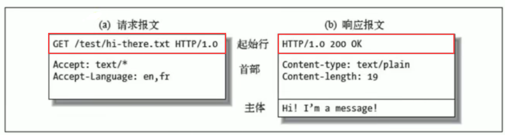

HTTP协议原理+实践

1. HTTP协议基础
1.1 经典五层模型


物理层：主要作用是定义物理设备如何传输数据
数据链路层：在通信的实体间建立数据链路连接
网络层：为数据在结点之间传输创建逻辑链路
传输层：向用户提供可靠的端到端（End-to-End）服务
传输层向高层屏蔽了下层数据通信的细节
应用层：为应用软件提供了服务
构建于TCP协议之上，屏蔽了网络传输相关细节
1.2 HTTP协议发展历史
HTTP/0.9
只有一个命令GET
没有HEADER等描述数据的信息
服务器发送完毕，就关闭TCP连接
20 世纪 90 年代初期，计算机处理能力低，存储容量小，网速慢，还是一片“信息荒漠”。网络上绝大多数的资源都是纯文本，很多通信协议也都使用纯文本，所以 HTTP 的设计也不可避免地受到了时代的限制。
HTTP/1.0
增加了 HEAD、POST 等命令
增加了响应状态码
Status code，标记可能的错误原因增加了 HTTP Header，让 HTTP 处理请求和响应更加灵活
引入了协议版本号概念
传输的数据不再仅限于文本
多字符集支持、多部分发送、权限、缓存等
HTTP/1.0 版本在 1996 年正式发布。它在多方面增强了 0.9 版，形式上已经和我们现在的 HTTP 差别不大。但是HTTP/1.0 并不是一个“标准”，只是记录已有实践和模式的一份参考文档，不具有实际的约束力，相当于一个“备忘录”。
HTTP/1.1
- 明确了连接管理，允许持久连接
- pipeline
- 增加了 PUT、DELETE 等新命令
- 增加了缓存管理和控制
- 允许响应数据分块（chunked），利于传输大文件
- 增加 Host ，让互联网主机托管成为可能
在“浏览器大战”结束之后的 1999 年，HTTP/1.1 发布了 RFC 文档，编号为 2616，正式确立了延续十余年的传奇。HTTP/1.1 是对 HTTP/1.0 的小幅度修正。但一个重要的区别是：它是一个“正式的标准”。这意味着今后互联网上所有的浏览器、服务器、网关、代理等等，只要用到 HTTP 协议，就必须严格遵守这个标准。
HTTP/1.1 开启了后续的“Web 1.0”“Web 2.0”时代。
由于 HTTP/1.1 太过庞大和复杂，所以在 2014 年又做了一次修订，原来的一个大文档被拆分成了六份较小的文档，编号为 7230-7235，优化了一些细节，但此外没有任何实质性的改动。
HTTP/2
- 所有数据以二进制传输
- 一个连接里发送多个请求不再需要按照顺序
- 头信息压缩以及推送等提高效率的功能
Google 开发了自己的浏览器 Chrome，然后推出了新的 SPDY 协议，并在 Chrome 里应用于自家的服务器，开启了第二次的“浏览器大战”。互联网标准化组织以 SPDY 为基础开始制定新版本的 HTTP 协议，最终在 2015 年发布了 HTTP/2，RFC 编号 7540。
HTTP/3
在 HTTP/2 还处于草案之时，Google 又发明了一个新的协议 QUIC，依托其的庞大用户量和数据量，持续地推动 QUIC 协议成为互联网上的“既成事实”。
2018 年，互联网标准化组织 IETF 提议将“HTTP over QUIC”更名为“HTTP/3”并获得批准，HTTP/3 正式进入了标准化制订阶段。
1.3 三次握手
在 TCP/IP 协议中，TCP 协议提供可靠的连接服务，采用三次握手建立一个连接

四次挥手：由于 TCP 连接是全双工的，因此每个方向都必须单独进行关闭

1.4 HTTP报文格式
HTTP方法：
- 用来定义对于资源的操作
- 常用的有GET、POST、PUT、DELETE等
- 从定义上讲有各自的语义
HTTP CODE：
定义服务器对请求的处理结果
各个区间的CODE有各自的语义
好的HTTP服务可以通过CODE判断结果
URI：Uniform Resource Identifier/统一资源标志符，用来唯一标识互联网上的信息资源，包括URL和URN
URL：Uniform Resource Locator/统一资源定位器
URN：永久统一资源定位符
1.5 一个简单web服务
创建一个基于node.js的简单的Web服务，然后在浏览器输出localhost:8000就可以得到返回值了
const http = require('http')
http.createServer(function (request, response) {
console.log('request come', request.url)
response.end("123")
}).listen(8000)
console.log('server listening on 8000')

2. HTTP的特性
2.1 HTTP客户端
浏览器：浏览器地址输入baidu.com，就会返回响应内容。General就是http的首行，它并不属于http报文，它不仅返回内容，还处理了返回内容，如Response

curl：直接请求baidu.com，返回如下，而浏览器会去识别这个标签，然后重定向到www.baidu.com


2.2 CORS 跨域请求
2.2.1 同域限制
server1.js：8880端口服务，返回test.html页面
const http = require('http')
const fs = require('fs')
http.createServer(function (request, response) {
console.log('request come', request.url)
const html = fs.readFileSync('test.html', 'utf8')
response.writeHead(200, {
'Content-Type': 'text/html'
})
response.end(html)
}).listen(8880)
console.log('server listening on 8880')test.html：向8887端口服务发起一个跨域的请求
跨域资源共享(CORS) 是一种机制，它使用额外的 HTTP 头来告诉浏览器 让运行在一个 origin (domain) 上的Web应用被准许访问来自不同源服务器上的指定的资源。当一个资源从与该资源本身所在的服务器不同的域、协议或端口请求一个资源时，资源会发起一个跨域 HTTP 请求。出于安全原因，浏览器限制从脚本内发起的跨源HTTP请求。
<!DOCTYPE html>
<html lang="en">
<head>
<meta charset="UTF-8">
<meta name="viewport" content="width=device-width, initial-scale=1.0">
<meta http-equiv="X-UA-Compatible" content="ie=edge">
<title>Document</title>
</head>
<body>
</body>
<script>
var xhr = new XMLHttpRequest()
//XMLHttpRequest和Fetch API遵循同源策略,这意味着使用这些API的Web应用只能从同一个域请求HTTP资源，除非使用CORS头文件
xhr.open('GET', 'http://127.0.0.1:8887/')
xhr.send()
</script>
</html>server2.js：8887端口服务
const http = require('http')
http.createServer(function (request, response) {
console.log('request come', request.url)
response.end('123')
}).listen(8887)
console.log('server listening on 8887')
解决方法：在添加server2.js中添加代码如下（浏览器在解析请求返回的内容时发现没有Access-Control-Allow-Origin设置为允许，会将返回内容忽略掉并报错）
response.writeHead(200, {
'Access-Control-Allow-Origin': '*'
})这里就可以指定域名来访问服务器，从而实现安全的跨域请求 ，也可以通过判断request.url来进行不同的跨域请求设置
提示：浏览器会认为localhost与127.0.0.1是跨域
2.2.2 jsonp实现跨域请求
直接在test.html中使用srcipt标签来实现跨域，这样就不需要在服务器设置Access-Control-Allow-Origin属性了
浏览器允许link、img、script标签上面的src或者是ref跨域来实现的
<!DOCTYPE html>
<html lang="en">
<head>
<meta charset="UTF-8">
<meta name="viewport" content="width=device-width, initial-scale=1.0">
<meta http-equiv="X-UA-Compatible" content="ie=edge">
<title>Document</title>
</head>
<body>
</body>
<script src="http://localhost:8887"></script>
</html>2.2.3 CORS预请求
修改test.html文件，刷新页面后再次发生跨域的报错
<!DOCTYPE html>
<html lang="en">
<head>
<meta charset="UTF-8">
<meta name="viewport" content="width=device-width, initial-scale=1.0">
<meta http-equiv="X-UA-Compatible" content="ie=edge">
<title>Document</title>
</head>
<body>
</body>
<script>
fetch('http://localhost:8887', {
method: 'POST',
headers: {
'X-Test-Cors': '123'
}
})
</script>
</html>
报错原因：
跨域资源共享标准（ cross-origin sharing standard ）允许在下列场景中使用跨域 HTTP 请求：
- 由 XMLHttpRequest 或 Fetch 发起的跨域 HTTP 请求
- Web 字体 (CSS 中通过 @font-face 使用跨域字体资源)
- WebGL 贴图
- 使用 drawImage 将 Images/video 画面绘制到 canvas
- 样式表（使用 CSSOM）
在发生跨域时的限制：
允许的方法默认只有：
GET、HEAD、POST，其他的方法是默认不允许的（其他方法就需要进行预请求）允许
Content-Type：text/plain、multipart/form-data、application/x-www-form-urlencoded,其他的也需要预请求其他限制：==请求头限制==(Fetch)、XMLHttpRequestUpload对象均没有注册任何事件监听器、请求中没有使用ReadableStream对象
解决方法：修改server2.js文件的请求头信息
response.writeHead(200, {
'Access-Control-Allow-Origin': '*',
'Access-Control-Allow-Headers': 'X-Test-Cors',
'Access-Control-Allow-Methods': 'POST, PUT, DELETE',
'Access-Control-Max-Age': '1000'
})浏览器比之前多了一个请求，即预请求

2.3 缓存Cache-Control
2.3.1 ==可缓存性==
- public：http请求返回的过程中，在Cache-Control中设置了public的值，代表在这个http请求中返回的内容所经过的任何路径（包括中间的一些http的代理服务器以及发出这个请求的客户端浏览器）都可以对返回内容进行缓存的操作
- private：只有发起请求的浏览器才可以进行缓存
- no-cache：不可以直接使用缓存
no-cache可以在本地、proxy服务器进行缓存，但是每次发起请求都要去服务器验证(2.5 资源验证)；如果服务器返回允许使用这部分缓存，才可以使用缓存
2.3.2 ==到期==
- max-age=
：设置这个缓存到多少秒过期 - s-maxage=
：s-maxage代替max-age，在代理服务器里才会生效，在客户端浏览器不会读取这个属性 - ma-stale=
：在max-age过期之后，如果我们返回的资源有这个max-stale的设置，发起请求的一方主动带的一个头，即便max-age过期了，只要在max-stale这个时间内依然可以使用这个过期的缓存，而不需要去原服务器请求（注意：只有在发起端设置才有用）
2.3.3 重新验证
- must-revalidate：在max-age过期了，我们必须到原服务端去发送这个请求来重新获取这部分数据，再来验证这部分内容是不是真的过期了，而不能直接使用本地的缓存
- proxy-revalidate：用在缓存服务器的，指在缓存服务器过期之后，必须到原服务端去发送这个请求来重新获取这部分数据，再来验证这部分内容是不是真的过期了，而不能直接使用本地的缓存
2.3.4 其他
- no-store：本地和代理服务器都是不可以缓存，每次都要去服务器端拿新的body内容
- no-transform：用在proxy服务器，告诉proxy服务器不可以随意改变返回的内容（例如不能随便压缩返回的图片）
注意：上面这些头只是一个限制性、声明性的作用，它没有任何强制的约束力
示例代码：
<!DOCTYPE html>
<html lang="en">
<head>
<meta charset="UTF-8">
<meta name="viewport" content="width=device-width, initial-scale=1.0">
<meta http-equiv="X-UA-Compatible" content="ie=edge">
<title>Document</title>
</head>
<body>
</body>
<script src="/script.js"></script>
</html>const http = require('http')
const fs = require('fs')
http.createServer(function (request, response) {
console.log('request come', request.url)
if (request.url === '/') {
const html = fs.readFileSync('test.html', 'utf8')
response.writeHead(200, {
'Content-Type': 'text/html'
})
response.end(html)
}
if (request.url === '/script.js') {
response.writeHead(200, {
'Content-Type': 'text/javascript',
'Cache-Control': 'max-age=20' // 设置缓存
})
response.end('console.log("script loaded")')
}
}).listen(8887)
console.log('server listening on 8887')


问题：我们希望服务端更新了内容之后，客户端也能更新而不是读取的客户端的缓存
解决方法：在打包完成后会在js文件名上根据打包完成的js文件以及其他的静态资源文件的内容加上一段hash码，如果js文件或者静态资源文件内容不变，hash码就不会变。也就是当url没有变就会使用本地的静态资源缓存，如果所有js文件或者静态资源文件内容变化了，那么嵌入到这些资源的url路径的hash码就会发生变化，这样客户端就会发起新的请求。
2.4 资源验证

验证头：
- Last-Modified：上次修改时间，配合If-Modifie-Since或者If-Unmodified-Since使用，比对上次修改时间以验证资源是否需要更新
请求的资源有Last-Modified，浏览器在下次请求的时候就会带上Last-Modified，服务器就读取Header中If-Modifie-Since的值来对比资源存在的地方，最后来对比上次修改的时间，如果时间是一样的代表资源还没有被重新修改过，服务器就告诉浏览器可以直接使用这个缓存
- Etag：数据签名，资源发生了改变它的数据签名就会改变；配合If-Match或者If-Non-Match使用，对比资源的签名判断是否使用缓存
示例代码
const http = require('http')
const fs = require('fs')
http.createServer(function (request, response) {
console.log('request come', request.url)
if (request.url === '/') {
const html = fs.readFileSync('test.html', 'utf8')
response.writeHead(200, {
'Content-Type': 'text/html'
})
response.end(html)
}
if (request.url === '/script.js') {
const etag = request.headers['if-none-match']
if (etag === '777') {
response.writeHead(304, {
'Content-Type': 'text/javascript',
'Cache-Control': 'max-age=2000000, no-cache',
'Last-Modified': '123',
'Etag': '777'
})
response.end()
} else {
response.writeHead(200, {
'Content-Type': 'text/javascript',
'Cache-Control': 'max-age=2000000, no-cache',
'Last-Modified': '123',
'Etag': '777'
})
response.end('console.log("script loaded twice")')
}
}
}).listen(8887)
console.log('server listening on 8887')


2.5 Cookie和Session
2.5.1 cookie
在服务端返回数据额时候，通过Set-Cookie这个header设置在浏览器里面，它保存在浏览器里面的内容，这个内容就叫它cookie；浏览保存了这个cookie之后，它在下次同域的请求当中，它就会带上这个cookie，通过这样来保证这个内容就是这个用户的
特点：
- 通过Set-Cookie设置
- 下次请求自动带上
- 键值对，可以设置多个
属性：
- max-age和expires设置过期时间
- Secure（指只在https的时候发送）
- HttpOnly（设置无法通过document.cookie访问，安全性考虑）
2.5.2 session
作用：服务器创建session出来后，会把session的id号，以cookie的形式回写给客户机，这样，只要客户机的浏览器不关，再去访问服务器时，都会带着session的id号去，服务器发现客户机浏览器带session id过来了，就会使用内存中与之对应的session为之服务。
2.5.3 Session和Cookie的主要区别
- Cookie是把用户的数据写给用户的浏览器。
- Session技术把用户的数据写到用户独占的session中。
- Session对象由服务器创建，开发人员可以调用request对象的getSession方法得到session对象。